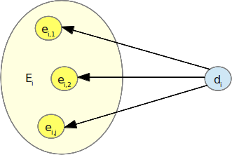

Titolo
Indice
- Pilastri
- Modello enciclopedico
- Ambiguità sintattica
- Ambiguità semantica
Modello enciclopedico
Un'enciclopedia è un'opera letteraria che raccoglie e ordina la sintesi della conoscenza umana in tutti i campi o in un determinato settore. Le enciclopedie sono divise in voci, o lemmi, cui si accede di solito in ordine alfabetico.
Dominio

Dizionario

Ambiguità sintattica
Ciascuna entità ammette 0…n sinonimi
- Requisiti
- Copertura
- Identità
Etichette primarie e secondarie

Ambiguità semantica
Ogni etichetta ha 1…n accezioni

Ogni accezione rappresenta l'etichetta di un'entità

Accezioni chiave e sinonimiche

Modello relazionale

Indice
Architettura
| Model | View | Controller | |
|---|---|---|---|
| Ricerca | model.providermodel.search |
view.search |
controller.search |
| Filtri | model.criteriamodel.filter |
view.filter |
controller.filter |
| Contenuti | model |
view.content |
controller |
| Navigazione | model.timeline |
view.timeline |
controller |
- Aree d'interesse
- Filtri di ricerca
- Risultati di ricerca
- Navigazione
Indice
- Filtro di ricerca
- Parametro
- Criterio
- Classe
- Widget
- Controller
Classi di filtri

- Variabili
- Insieme
- Casi d'uso
Criteri
Rappresenta l'insieme su cui opera una classe di filtri

- Parametri
- Tipo di dati
- Sorgente dati
Parametri
- Ammessi ()
- Bloccati ()

Sorgenti dati

Abstract Factory

Tabella 5: Riepilogo delle classi gestite dal design pattern Abstract Factory (v. tesi)
Indice
Risultati di ricerca

- Casi d'uso
Contatore
- Pro
- …
- Contro
- …
Array di booleani
- Pro
- …
- Contro
- …
Command
Implementa le operazioni di aggiornamento dei risultati di ricerca